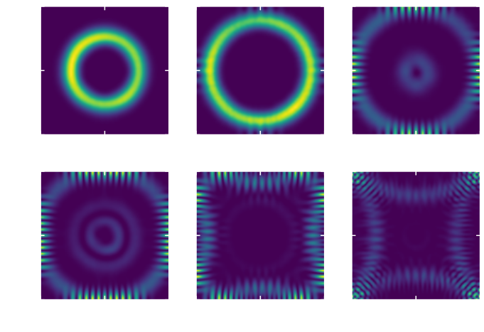

Types of instabilitiesLow pump powersHigh pump powersGoldstone mode evolutionVarying the pump powerVarying the pump momentum
small ks
large ks
Varying the signal momentum


$H=\mathcal{H}_0+\frac{1}{2}\kappa
\sum_{m,n}\left[(m-m_0)^{2}+(n-n_0)^{2}\right]\hat{a}_{m,n}^{\dagger}\hat{a}_{m,n}$